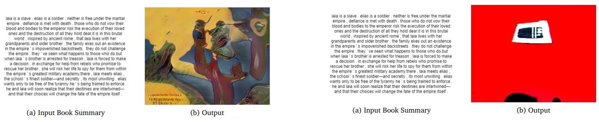

Mohammad Imrul Jubair | Projects
| back to homepage |
DIY Graphic Tab (2021)
[Completed]
Everyday, more and more people are turning to online learning, which has altered our traditional classroom method. Recording lectures has always been a normal task for online educators, and it has lately become even more important during the epidemic because actual lessons are still being postponed in several countries. When recording lectures, a graphics tablet is a great substitute for a whiteboard because of its portability and ability to interface with computers. This graphic tablet, however, is too expensive for the majority of instructors. In this paper, we propose a computer vision-based alternative to the graphics tablet for instructors and educators, which functions largely in the same way as a graphic tablet but just requires a pen, paper, and a laptop's webcam. We call it "Do-It-Yourself Graphics Tab" or "DIY Graphics Tab". Our system receives a sequence of images of a person's writing on paper acquired by a camera as input and outputs the screen containing the contents of the writing from the paper. The task is not straightforward since there are many obstacles such as occlusion due to the person's hand, random movement of the paper, poor lighting condition, perspective distortion due to the angle of view, etc. A pipeline is used to route the input recording through our system, which conducts instance segmentation and preprocessing before generating the appropriate output. We also conducted user experience evaluations from the teachers and students, and their responses are examined in this paper.
Outcome:
- Paper: ‘DIY graphics tab: A costeffective alternative to graphics tablet for educators’, AAAI 2022 workshop.[ link ] [ arXiv ] [ code ]

Bengali Scene Text With Style Retention (2021)
[Ongoing]
We aim to edit Bengali scene text images. The text in a scene image is hard to change without destroying its natural look, background, colour, and style. This transformation has to be done so that both the environment and the text remain the same as before. It becomes even more complicated when the text is in Bengali because the geometric structure of the Bengali alphabet is very complex compared to the English alphabet.
Book Cover Synthesis (2021)
[Ongoing]
Covers are the face of a book. Designing a book cover has been the job of humans for a long time. In this project, we explore ways to create a book cover from its summary using machine learning.

Artificial Jamdani Artist (2020)
[Completed]
Jamdani is the strikingly patterned textile heritage of Bangladesh. The exclusive geometric motifs woven on the fabric are the most attractive part of this craftsmanship having a remarkable influence on textile and fine art. In this paper, we have developed a technique based on Generative Adversarial Network that can learn to generate entirely new Jamdani patterns from a collection of Jamdani motifs that we assembled, the newly formed motifs can mimic the appearance of the original designs. Users can input the skeleton of a desired pattern in terms of rough strokes and our system finalizes the input by generating the complete motif which follows the geometric structure of real Jamdani ones. To serve this purpose, we collected and preprocessed a dataset containing a large number of Jamdani motifs images from authentic sources via fieldwork and applied a state-of-the-art method called pix2pix on it. To the best of our knowledge, this dataset is currently the only available dataset of Jamdani motifs in digital format for computer vision research. Our experimental results of the pix2pix model on this dataset show satisfactory outputs of computer-generated images of Jamdani motifs and we believe that our work will open a new avenue for further research.
Outcome:
- Paper: ‘Jamdani Motif Generation using Conditional GAN’, ICCIT 2020.[ link ] [ slides ] [ supplementary materials ]
- Selected for Bangladesh Hi-Tech Park Authority & IEB's UNIBATOR program
- Featured in the news portal - United News Bangladesh (UNB) [see here].

Image to Image Attire Transfer (2020)
[Completed]
Virtual trial room is a lucrative tool for online-based attire shopping. Developing such a system is very challenging as it requires robustness from a user's point of view. In this paper, we present a technique for image-to-image attire transfer using Generative Adversarial Networks (GAN) and image processing methods that can transfer the clothing from a person's image to another person's image. Our system takes two images: (1) a full-length image of the user, and (2) an image of another person with a target clothing. Our method then produces a new image of the user with the targeted outfit while keeping the shape, pose, action, and identity of the user unchanged. For this purpose, we exploited the Liquid Warping GAN for domain transfer and U-Net with Grab-cut for segmentation. We illustrate the results of our work in this paper and the outcomes show that our approach performs very satisfactorily for image-to-image attire transfer. We believe this work will contribute to the clothing sector of our e-commerce system by making the shopping smoother, as it will be able to transfer a human model's outfit to a buyer's body in the image and thus helping him/her in deciding a suitable product to purchase.
Outcome:

Synthesizing Cartoons from Basic Geometric Primitives (2020)
[Ongoing]
In cartoon animations, geometry plays a significant role in drawing cartoons. Drawing cartoon characters as a combination of geometric shapes is the most straightforward technique of all. Basic geometric shapes such as triangles, rectangles, circles, and ellipses can be amalgamated to make structures of a particular entity, which later can be utilized to draw that entity. The essence of drawing cartoons as a combination of simple geometric shapes lies in the simplicity of thinking. The vast majority of the individuals may not draw a mickey mouse consummately or like an expert artist; however, they can draw a simple mickey mouse with the combination of geometric shapes like circles, ellipses, etc. Moreover, physically and mentally challenged children usually don’t have the same outlook and capability to think as professional artists. Our work can be helpful in drawing apparatus for themselves as well as for the other kids. To solve this complex problem and simplify it, we propose a method, Shapes2toon, based on Image to Image Translation with conditional generative adversarial network model for translating the simple geometric representation of a cartoon character to a natural cartoon character. For this purpose, we developed a javascript-based drawing tool named “Toon Shape Tracer” to trace the shapes manually from the cartoon characters and built a dataset.
Bangladeshi sign language detection using Deep Learning (2018)
[Completed]
Bangladeshi Sign Language (BdSL) is a commonly used medium of communication for the hearing-impaired people in Bangladesh. A real-time BdSL interpreter with no controlled lab environment has a broad social impact and an interesting avenue of research as well. Also, it is a challenging task due to the variation in different subjects (age, gender, color, etc.), complex features, and similarities of signs and clustered backgrounds. However, the existing dataset for BdSL classification task is mainly built in a lab friendly setup which limits the application of powerful deep learning technology. In this paper, we introduce a dataset named BdSL36 which incorporates background augmentation to make the dataset versatile and contains over four million images belonging to 36 categories. Besides, we annotate about 40,000 images with bounding boxes to utilize the potentiality of object detection algorithms. Furthermore, several intensive experiments are performed to establish the baseline performance of our BdSL36. Moreover, we employ beta testing of our classifiers at the user level to justify the possibilities of real-world application with this dataset. We believe our BdSL36 will expedite future research on practical sign letter classification. We make the datasets and all the pre-trained models available for further researcher.
Outcomes:
- Paper: ‘BdSL36: A Dataset for Bangladeshi Sign Letters Recognition’, ACCV 2020 (Workshop paper). [ pdf ] [ presentation at ACCV2020 ] [ supplementary materials ] [ Our BDSL36 dataset ]
- Paper: ‘Real Time Bangladeshi Sign Language Detection using Faster R-CNN’, ICIET 2018. [ arXiv ] [ slides ] [ Our BdSLImSet dataset ]
Toon2real: Cartoon to Photorealistic image synthesis using GAN (2018)
[Completed]
In terms of Image-to-image translation, Generative Adversarial Networks (GANs) has achieved great success even when it is used in the unsupervised dataset. In this work, we aim to translate cartoon images to photo-realistic images using GAN. We apply several state-of-the-art models to perform this task; however, they fail to perform good quality translations. We observe that the shallow difference between these two domains causes this issue. Based on this idea, we propose a method based on CycleGAN model for image translation from cartoon domain to photo-realistic domain. To make our model efficient, we implemented Spectral Normalization which added stability in our model. We demonstrate our experimental results and show that our proposed model has achieved the lowest Fréchet Inception Distance score and better results compared to another state-of-the-art technique, UNIT.
Outcomes:
- Paper: 'toon2real: Translating Cartoon Images to Realistic Images', ICTAI 2020 (Short paper). [ link ] [arXiv]
- Paper: ‘Cartoon-to-real: An Approach to Translate Cartoon to Realistic Images using GAN’ (student poster), ICIET 2018. [ arXiv ] [ poster ]
- 1st Runner-up: Poster presentation at MINDSPARKS 2019.

WhyMyFace: What it is in your Mind is in your Face! (2018)
[Completed]
Faces and their expressions are one of the potent subjects for digital images. Detecting emotions from images is an ancient task in the field of computer vision; however, performing its reverse -- synthesizing facial expressions from images -- is quite new. Such operations of regenerating images with different facial expressions, or altering an existing expression in an image require the Generative Adversarial Network (GAN). In this paper, we aim to change the facial expression in an image using GAN, where the input image with an initial expression (i.e., happy) is altered to a different expression (i.e., disgusted) for the same person. We used StarGAN techniques on a modified version of the MUG dataset to accomplish this objective. Moreover, we extended our work further by remodeling facial expressions in an image indicated by the emotion from a given text. As a result, we applied a Long Short-Term Memory (LSTM) method to extract emotion from the text and forwarded it to our expression-altering module. As a demonstration of our working pipeline, we also create an application prototype of a blog that regenerates the profile picture with different expressions based on the user's textual emotion.
Outcomes:
- Paper: ‘Altering Facial Expression Based on Textual Emotion’, VISAPP2022 (Short paper) [ arXiv ]

Icosahedral Maps for a Multiresolution Representation of Earth Data (2014 - 2016)
[Completed]
The icosahedral non-hydrostatic (ICON) model is a digital Earth model based on an icosahedral representation and used for numerical weather prediction. In this paper, we introduce icosahedral maps that are designed to fit the geometry of different cell configurations in the ICON model. These maps represent the connectivity information in ICON in a highly structured two-dimensional hexagonal representation that can be adapted to fit different cell configurations. Our maps facilitate the execution of a multiresolution analysis on the ICON model. We demonstrate this by applying a hexagonal version of the discrete wavelet transform in conjunction with our icosahedral maps to decompose ICON data to different levels of detail and to compress it via a thresholding of the wavelet coefficients.
-
The project makes the following contributions:
- We introduce "Icosahedral Maps", an efficient mapping technique to capture the connectivity information for all cell-types in ICON’s soup structure and store it in a highly structured representation. This is an extension to the atlas of connectivity maps (ACM) data structure and represents the Earth’s surface as 2D hexagonal grids. We provide the necessary grid traversal scheme called – "Hexagonal Fan" – that suitably records the connectivity of all cell types in ICON in a common hexagonal representation.
- We demonstrate, for ICON data, the decomposition to and reconstruction from different levels-of-detail using a function-based dyadic hexagonal wavelet scheme. Given the icosahedral maps, the wavelet filters associated with the hexagonal discrete wavelet transform are efficiently applied via 2D convolution, upsampling, and downsampling operations. The benefit of having such maps is that the same wavelet can be used for all cell-types.
- Paper: "Icosahedral Maps for a Multiresolution Representation of Earth Data", VMV2016. [ link ] [ paper ]
- Thesis: "Icosahedral Maps for a Multiresolution Representation of Earth Data", Department of Computer Science, University of Calgary, 2016. [ link ] [ slides ]
- Paper: "Multiresolution Visualization of Digital Earth Data via Hexagonal Box Spline Wavelets", VIS2015. [ link ] [ poster ]
Similar models to ICON – in terms of grid layout and structure – are the MPAS and the NICAM model. This makes the methods developed for ICON in this project almost directly applicable to MPAS and NICAM as well.
Outcomes:
Implementing Atlas of Connectivity Maps for ICON Grid (2014)
[Completed]
This project was a part of my MSc thesis. The goal of this project is to impelement the Atlas of Connectivity Maps on ICON (Icosahedral Nonhydrostatic) data. I developed a system that unfold the semiregular grids of the ICON model and map its connectivity information into 2D arrays corresponding to 2D regular pateches. I created a GUI to explore the ICON vertices and connectivity information interactively. The project was succefully completed as SciVis course project in fall 2014.
Outcome:
- The project was later exteneded and multiresolution filters are applied on the 2D pateches to explore different levels-of-details (LoDs). The project was presented as a poster in CPSC Industrial Day 2015, University of Calgary. [ project report ] [ slides ] [ poster ] [ code ]

GLSL Impelementation of ICON Data Visualization (2015)
[Completed]
This is a part of my CPSC 691 Rendering course project. In this project, I visualized the triangle meshe from ICON (Icosahedral Nonhydrostatic) dataset using GLSL. In order to visualize, I used my favourite Parula colormap. I followed multipassing method to render triangle meshe with the edges. [code]
| Jump to top | or | Back to homepage |